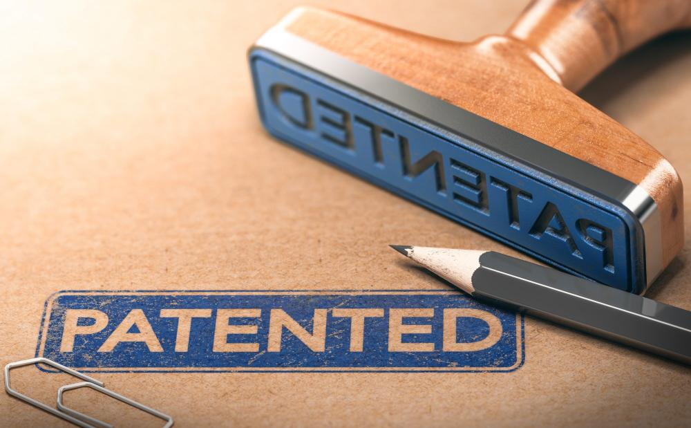

平山科技
有限公司
PingShan Technology
專利
Patents
專利 (Patents)

碳納米材料是公司主要的研發方向。公司聯同北京清華大學，香港科技大學，廣東佛山科技學院在研發和應用方面 取得不少重要成果，並申請了多項相關專利。
一種利用原位自生的催化劑在氧化亞硅表面催化生長碳納米管的方法
一種紅磷/石墨複合材料作爲鋰離子電池負極材料的方法
一種金屬有機框架材料(MOF)提升於鋰硫電池循環性能的方法
一種流動床CVD 法製備納米硅/碳納米管複合負極的方法
一種具有自潔功能的口罩的製備方法
一種具有高導電性的生物質石墨烯的製備方法